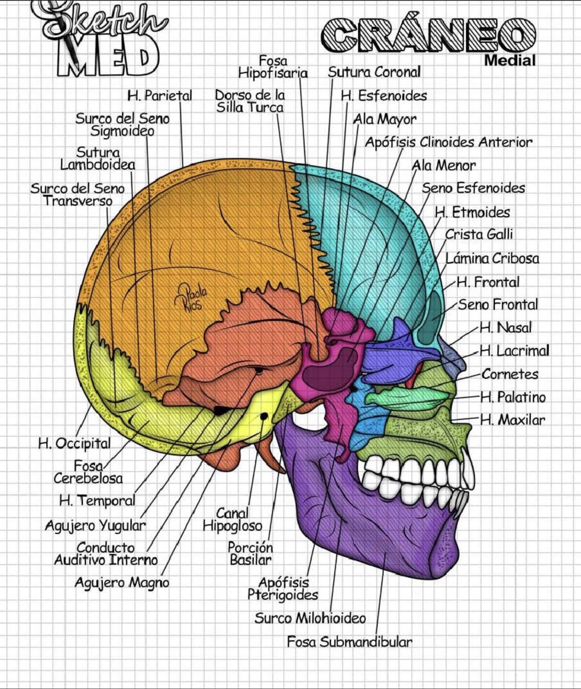
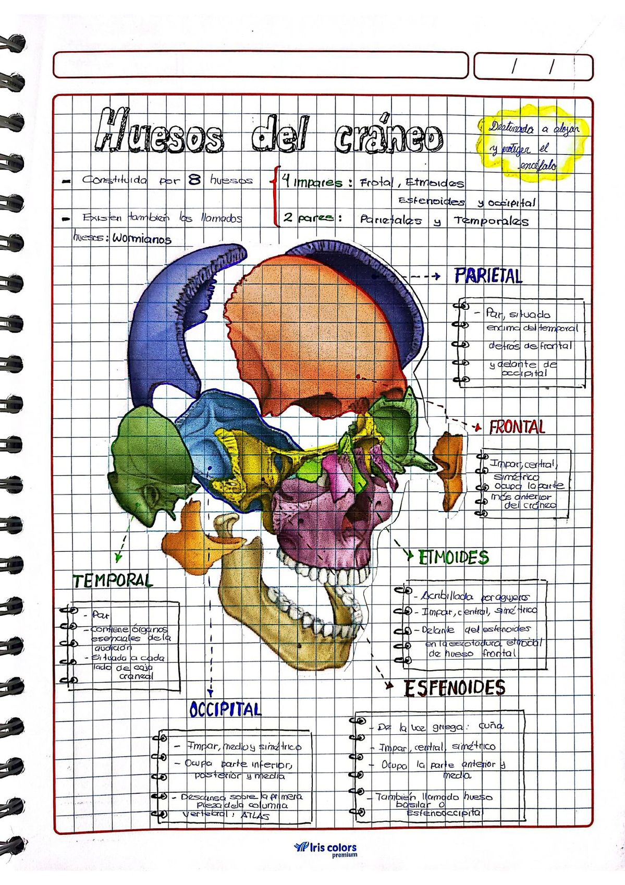

6 imagens de referência (esquemas + peças reais) para revisão da osteologia do crânio. Toque numa imagem para abrir em tamanho maior.

Vista Medial (corte sagital)
Corte medial mostrando fossas cranianas, seios paranasais, apófises e forames — ótimo para revisar a base interna do crânio e as relações entre esfenoide, etmoide, temporal e occipital.

Norma Frontal (vista anterior)
Vista anterior clássica: órbitas, cavidade nasal, maxila e mandíbula, com destaque para suturas e forames infraorbitários/mentonianos.

Osso Frontal isolado (peça real)
Foto de peça anatômica com margem orbitária, glabela, osso lacrimal e relações com esfenoide, zigomático e maxila.

Base do Crânio — forames e apófises (peça real)
Norma basal com côndilo occipital, forame oval, forame espinhoso, apófise estiloide e mastoide — foco nos forames de passagem de nervos e vasos.

Pontos Craniométricos (vista lateral)
Bregma, lambda, ptério, astério, dácrio, glênio, gônio, ínion e estefânio — pontos clássicos de prova prática.

Resumo — Ossos do Crânio (8 ossos)
Quadro-resumo: 4 ossos ímpares (frontal, etmoide, esfenoide, occipital) e 2 pares (parietais, temporais), além dos ossos wormianos.